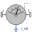

JointUSPUniversal - spherical - prismatic joint aggregation (no constraints, no potential states) |
Diagram
{kind=link}
Information
This information is part of the Modelica Standard Library maintained by the Modelica Association.
This component consists of a universal joint at frame_a, a prismatic joint at frame_b and a spherical joint which is connected via rod1 to the universal and via rod2 to the prismatic joint, see the default animation in the following figure (the axes vectors are not part of the default animation):
This joint aggregation has no mass and no inertia and introduces neither constraints nor potential state variables. It should be used in kinematic loops whenever possible since the non-linear system of equations introduced by this joint aggregation is solved analytically (i.e., a solution is always computed, if a unique solution exists).
The universal joint is defined in the following way:
- The rotation axis of revolute joint 1 is along parameter vector n1_a which is fixed in frame_a.
- The rotation axis of revolute joint 2 is perpendicular to axis 1 and to the line connecting the universal and the spherical joint (= rod 1).
The definition of axis 2 of the universal joint is performed according to the most often occurring case. In a future release, axis 2 might be explicitly definable via a parameter. However, the treatment is much more complicated and the number of operations is considerably higher, if axis 2 is not orthogonal to axis 1 and to the connecting rod.
Note, there is a singularity when axis 1 and the connecting rod are parallel to each other. Therefore, if possible n1_a should be selected in such a way that it is perpendicular to rRod1_ia in the initial configuration (i.e., the distance to the singularity is as large as possible).
The rest of this joint aggregation is defined by the following parameters:
- The position of the spherical joint with respect to the universal joint is defined by vector rRod1_ia. This vector is directed from frame_a to the spherical joint and is resolved in frame_ia (it is most simple to select frame_ia such that it is parallel to frame_a in the reference or initial configuration).
- The position of the spherical joint with respect to the prismatic joint is defined by vector rRod2_ib. This vector is directed from the inner frame of the prismatic joint (frame_ib or prismatic.frame_a) to the spherical joint and is resolved in frame_ib (note, that frame_ib and frame_b are parallel to each other).
- The axis of translation of the prismatic joint is defined by axis vector n_b. It is fixed and resolved in frame_b.
- The two frames of the prismatic joint, i.e., frame_b and frame_ib, are parallel to each other. The distance between the origins of these two frames along axis n_b is equal to "prismatic.s(t) + s_offset", where "prismatic.s(t)" is a time varying variable and "s_offset" is a fixed, constant offset parameter.
- When specifying this joint aggregation with the definitions above, two different configurations are possible. Via parameter s_guess a guess value for prismatic.s(t0) at the initial time t0 is given. The configuration is selected that is closest to s_guess (|prismatic.s - s_guess| is minimal).
An additional frame_ia is present. It is fixed in the rod connecting the universal and the spherical joint at the origin of frame_a. The placement of frame_ia on the rod is implicitly defined by the universal joint (frame_a and frame_ia coincide when the angles of the two revolute joints of the universal joint are zero) and by parameter vector rRod1_ia, the position vector from the origin of frame_a to the spherical joint, resolved in frame_ia.
An additional frame_ib is present. It is fixed in the rod connecting the prismatic and the spherical joint at the side of the prismatic joint that is connected to this rod (= rod2.frame_a = prismatic.frame_a). It is always parallel to frame_b.
An additional frame_im is present. It is fixed in the rod connecting the prismatic and the spherical joint at the side of the spherical joint that is connected to this rod (= rod2.frame_b). It is always parallel to frame_b.
The easiest way to define the parameters of this joint is by moving the MultiBody system in a reference configuration where all frames of all components are parallel to each other (alternatively, at least frame_a and frame_ia of the JointUSP joint should be parallel to each other when defining an instance of this component).
In the public interface of the JointUSP joint, the following (final) parameters are provided:
parameter Real rod1Length(unit="m") "Length of rod 1"; parameter Real eRod1_ia[3] "Unit vector along rod 1, resolved in frame_ia"; parameter Real e2_ia [3] "Unit vector along axis 2, resolved in frame_ia";
This allows a more convenient definition of data which is related to rod 1. For example, if a box shall be connected at frame_ia directing from the origin of frame_a to the middle of rod 1, this might be defined as:
Modelica.Mechanics.MultiBody.Joints.Assemblies.JointUSP jointUSP(rRod1_ia={1.2, 1, 0.2});
Modelica.Mechanics.MultiBody.Visualizers.FixedShape shape(shapeType = "box",
lengthDirection = jointUSP.eRod1_ia,
widthDirection = jointUSP.e2_ia,
length = jointUSP.rod1Length/2,
width = jointUSP.rod1Length/10);
equation
connect(jointUSP.frame_ia, shape.frame_a);
Parameters (20)
| animation |
Value: true Type: Boolean Description: = true, if animation shall be enabled |
|---|---|
| showUniversalAxes |
Value: true Type: Boolean Description: = true, if universal joint shall be visualized with two cylinders, otherwise with a sphere (provided animation=true) |
| n1_a |
Value: {0, 0, 1} Type: Axis Description: Axis 1 of universal joint fixed and resolved in frame_a (axis 2 is orthogonal to axis 1 and to rod 1) |
| n_b |
Value: {-1, 0, 0} Type: Axis Description: Axis of prismatic joint fixed and resolved in frame_b |
| rRod1_ia |
Value: {1, 0, 0} Type: Position[3] (m) Description: Vector from origin of frame_a to spherical joint, resolved in frame_ia |
| rRod2_ib |
Value: {-1, 0, 0} Type: Position[3] (m) Description: Vector from origin of frame_ib to spherical joint, resolved in frame_ib (frame_ib is parallel to frame_b) |
| s_offset |
Value: 0 Type: Position (m) Description: Relative distance offset of prismatic joint (distance between the prismatic joint frames = s(t) + s_offset) |
| s_guess |
Value: 0 Type: Position (m) Description: Select the configuration such that at initial time |s(t0)-s_guess| is minimal |
| sphereDiameter |
Value: world.defaultJointLength Type: Diameter (m) Description: Diameter of the spheres representing the universal and the spherical joint |
| rod1Diameter |
Value: sphereDiameter / Types.Defaults.JointRodDiameterFraction Type: Diameter (m) Description: Diameter of rod 1 connecting the universal and the spherical joint |
| rod2Diameter |
Value: rod1Diameter Type: Diameter (m) Description: Diameter of rod 2 connecting the prismatic and the spherical joint |
| boxWidthDirection |
Value: {0, 1, 0} Type: Axis Description: Vector in width direction of prismatic joint, resolved in frame_b |
| boxWidth |
Value: world.defaultJointWidth Type: Distance (m) Description: Width of prismatic joint box |
| boxHeight |
Value: boxWidth Type: Distance (m) Description: Height of prismatic joint box |
| cylinderLength |
Value: world.defaultJointLength Type: Distance (m) Description: Length of cylinders representing the two universal joint axes |
| cylinderDiameter |
Value: world.defaultJointWidth Type: Distance (m) Description: Diameter of cylinders representing the two universal joint axes |
| checkTotalPower |
Value: false Type: Boolean Description: = true, if total power flowing into this component shall be determined (must be zero) |
| eRod1_ia |
Value: rod1.eRod_ia Type: Real[3] Description: Unit vector from origin of frame_a to origin of spherical joint, resolved in frame_ia |
| e2_ia |
Value: rod1.e2_ia Type: Real[3] Description: Unit vector in direction of axis 2 of universal joint, resolved in frame_ia |
| rod1Length |
Value: rod1.rodLength Type: Distance (m) Description: Length of rod 1 (= distance between universal and spherical joint) |
Inputs (6)
| sphereColor |
Default Value: Modelica.Mechanics.MultiBody.Types.Defaults.JointColor Type: Color Description: Color of the spheres representing the universal and the spherical joint |
|---|---|
| rod1Color |
Default Value: Modelica.Mechanics.MultiBody.Types.Defaults.RodColor Type: Color Description: Color of rod 1 connecting the universal and the spherical joint |
| rod2Color |
Default Value: rod1Color Type: Color Description: Color of rod 2 connecting the prismatic and the spherical joint |
| boxColor |
Default Value: sphereColor Type: Color Description: Color of prismatic joint box |
| specularCoefficient |
Default Value: world.defaultSpecularCoefficient Type: SpecularCoefficient Description: Reflection of ambient light (= 0: light is completely absorbed) |
| cylinderColor |
Default Value: Modelica.Mechanics.MultiBody.Types.Defaults.JointColor Type: Color Description: Color of cylinders representing the two universal joint axes |
Connectors (7)
| frame_a |
Type: Frame_a Description: Coordinate system fixed to the component with one cut-force and cut-torque |
|
|---|---|---|
| frame_b |
Type: Frame_b Description: Coordinate system fixed to the component with one cut-force and cut-torque |
|
| frame_ia |
Type: Frame_a Description: Coordinate system at origin of frame_a fixed at connecting rod of universal and spherical joint |
|
| frame_ib |
Type: Frame_b Description: Coordinate system at origin of frame_b fixed at connecting rod of spherical and prismatic joint |
|
| frame_im |
Type: Frame_b Description: Coordinate system at origin of spherical joint fixed at connecting rod of spherical and prismatic joint |
|
| axis |
Type: Flange_a Description: 1-dim. translational flange that drives the prismatic joint |
|
| bearing |
Type: Flange_b Description: 1-dim. translational flange of the drive bearing of the prismatic joint |
Components (6)
| world |
Type: World |
|
|---|---|---|
| prismatic | ||
| rod1 |
Type: UniversalSpherical |
|
| rod2 |
Type: FixedTranslation |
|
|  | relativePosition |
Type: RelativePosition |
| position_b |
Type: Constant[3] |
Used in Components (1)
|
Modelica.Mechanics.MultiBody.Joints.Assemblies
Planar revolute - revolute - prismatic joint aggregation (no constraints, no potential states) |